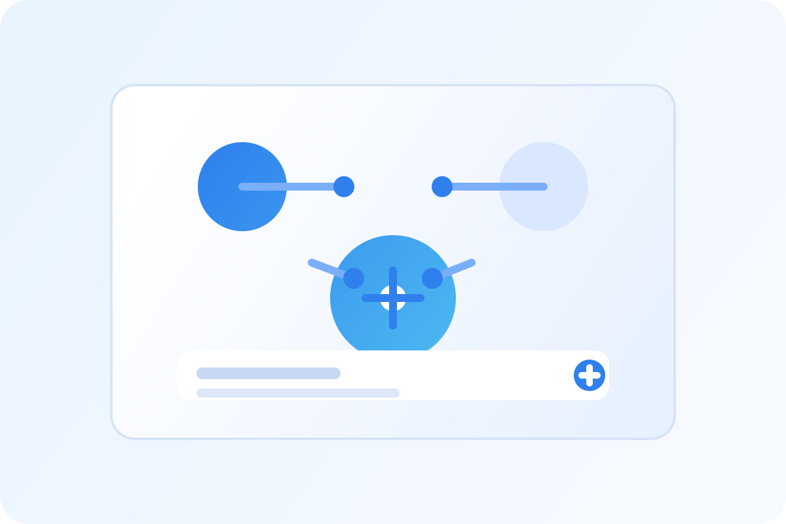
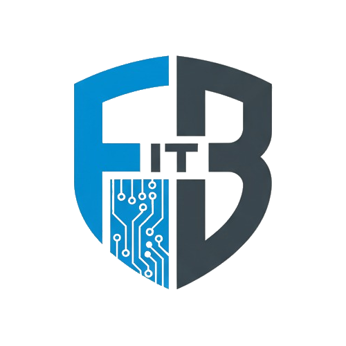
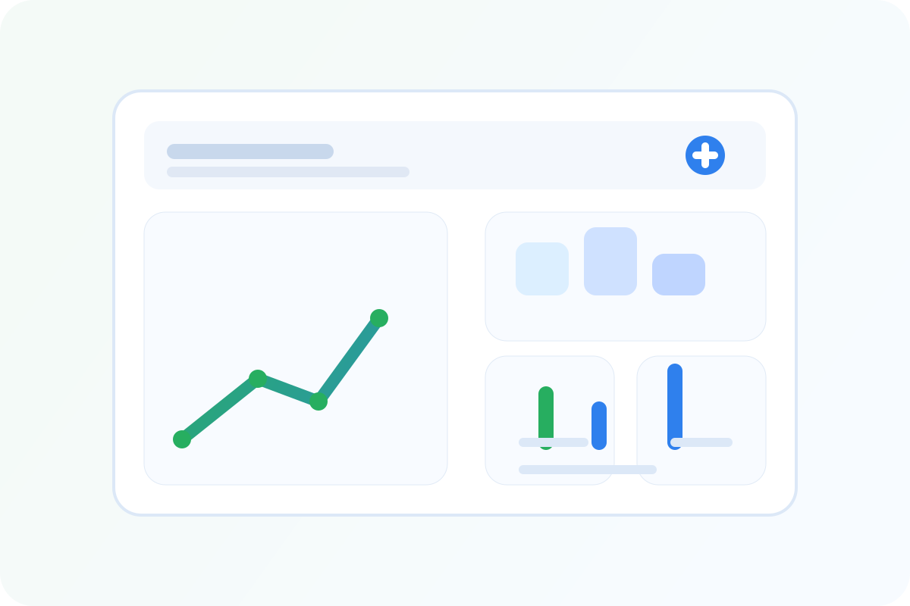

AI Solutions
Support your teams with intelligent assistants, workflow automation, and better customer experiences.

Developer Consultant | Creating Scalable, Innovative, and Robust Solutions
AI + Dashboards for business growth
I design practical AI experiences and dashboards that automate routine work, highlight opportunities, and make it easier to take action from your data.

Support your teams with intelligent assistants, workflow automation, and better customer experiences.

Track the KPIs that matter most with clear dashboards built to turn numbers into decisions.
Identifying high-value AI use cases for your business and turning them into practical solutions.
Building scalable and robust web applications using state-of-the-art frameworks like .NET and Drupal.
Providing expert advice on project architecture, code quality, and developer workflows to streamline your software development process.
Creating tailored solutions that fit your unique business needs and goals, from plugins to full-stack applications.